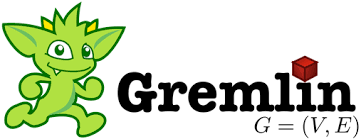

Query Languages
Query languages are designed to make queries in databases and information systems. They allow users to retrieve and manipulate data stored in databases. SQL is the most widely used query language and is essential for managing and querying relational databases. Gremlin is a graph traversal language used for querying graph databases. SPARQL is a query language for querying and manipulating RDF (Resource Description Framework) data. Cypher is used for querying graph databases and is known for its expressive syntax. These languages are vital for data analysis and database management.
- SQL:
 Structured Query Language for databases
Structured Query Language for databases - Gremlin:  Graph traversal language
- SPARQL: Query language for RDF
- Cypher: Query language for graph databases